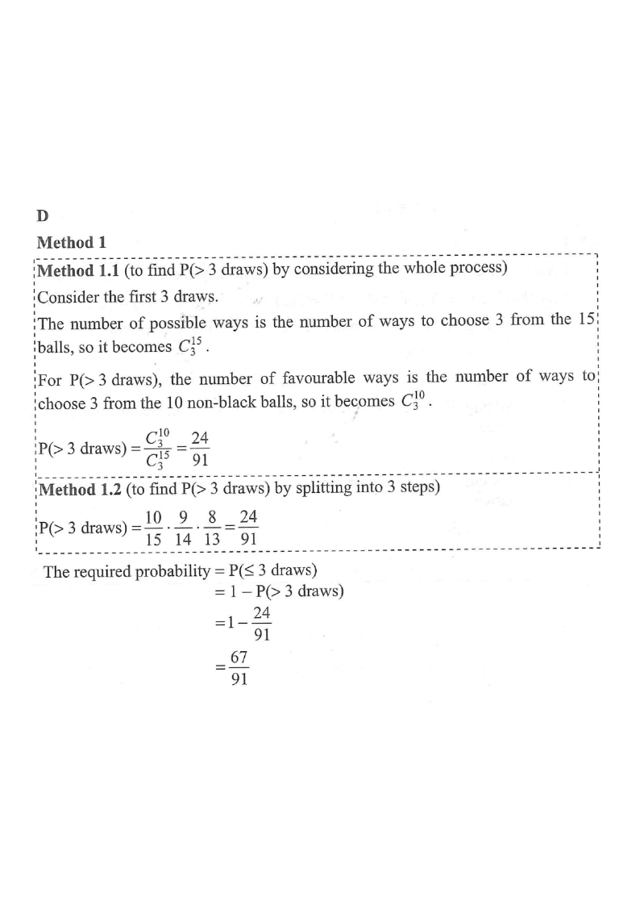

Scroll the steps on the right — the figure updates.
Topic 14 · Probability (drawing without replacement)
A bag contains $7$ red balls, $3$ yellow balls and $5$ black balls. A child repeats drawing one ball at a time randomly from the bag without replacement until a black ball is drawn. Find the probability that the child needs at most three draws.

Question. A bag contains \(5\) red balls, \(4\) yellow balls and \(6\) black balls. A child draws one ball at a time at random without replacement until a black ball is drawn. Find the probability that the child needs at most three draws.